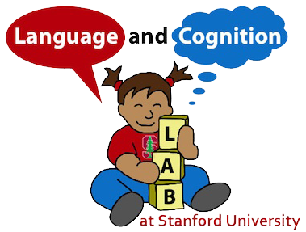
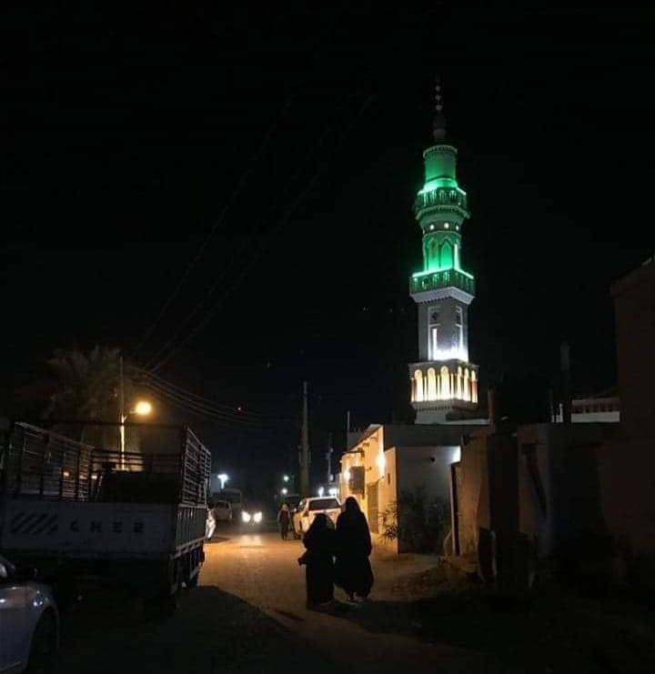

About Me
Hello! I'm Samah (or in Arabic, سماح), a PhD student in the Psychology Department at Stanford University. I work with Michael C. Frank in the Language and Cognition Lab.
Broadly, I'm fascinated by how children make sense of the world, especially how they acquire language. I consider myself a **developmental psychologist under construction** 😃.
When I'm not running studies with children, analyzing data, or struggling with statistical models and online experiments, I often find myself questioning the scientific endeavor itself, pondering the legitimacy of psychological findings and the nature of knowledge.
Outside of research, I enjoy listening to Arabic music, watching TV, chatting with family and friends, and exploring the rich tradition of Islamic Sufism.

Background
I was born and raised in Khartoum, Sudan; right where the River Nile comes to life. If you’re curious to know more, check out my blog post: A Flesh in Palo Alto, A Soul in Khartoum.
Before Stanford, I earned a bachelor's degree in Electrical and Electronic Engineering at the University of Khartoum. But over time, I found thinking about the human mind far more captivating than thinking about circuits and engines. Now, I study **little minds with big ideas and boundless curiosity** in other words, children.
انا بت مقرن النيلين :)
Want to read more? Visit my blog (Gblog is mostly in Arabic, Medium is mostly in English :D):
Medium Blog Google Blogspot